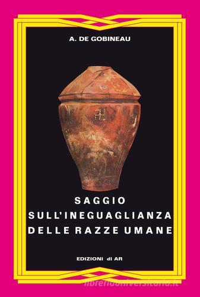

30:05 · 5 OPERE
Sulle polemiche al Salone del Libro di Torino.
Il filo del discorso
Dr Divago interviene sulle esclusioni dal Salone del Libro di Torino e sostiene che la cultura debba affrontare anche le idee ostili attraverso lettura e discussione. Il precedente delle contestazioni a Israele come paese ospite viene accostato alla polemica contro un editore di estrema destra, riconducibile al caso Altaforte del 2019. Il relatore giudica queste esclusioni un antifascismo che imita i metodi autoritari che vorrebbe combattere: è la sua posizione polemica, distinta dalla ricostruzione degli atti del Salone. Dopo i richiami a Renato Curcio e Franco Freda, il discorso respinge il razzismo e passa al capitolo Zinco del Sistema periodico di Primo Levi. L’immagine delle impurità necessarie alla reazione chimica diventa una difesa del dissenso e della varietà umana. L’edizione critica tedesca di Mein Kampf serve poi come esempio della possibilità di studiare e confutare un testo pericoloso. Nella seconda parte Dr Divago contesta la parola sovranismo, confrontandola con la sovranità popolare della Costituzione e criticando alcuni esempi giornalistici del vocabolario Treccani. La conclusione torna alla lettura come pratica di confronto. La scheda distingue libertà di espressione, ammissione a una manifestazione, concetti politici e verifiche storiche, senza trasformare le analogie del relatore in equivalenze dimostrate.
I libri nel discorso

Saggio sull’ineguaglianza delle razze umane
Copertina: Edizioni di AR, Gli inattuali, 2016, 310 pagine nel catalogo, rilegato, traduzione di Franco G. Freda, ISBN 9788898672714. Titolo originale Essai sur l’inégalité des races humaines, 1853–1855. L’edizione non è identificata come esemplare mostrato nel video.
Copertina autentica di Ar con bordo fucsia e giallo, vaso su fondo nero, autore e titolo leggibili. La fonte commerciale riporta una filigrana del catalogo. La pubblicazione in repertorio documenta la citazione critica del testo, senza adottarne le tesi razziste.
Titolo Saggio sull’ineguaglianza delle razze, associato a Franco Freda: autore riscontrato Gobineau, traduttore Freda.
Passaggio 7:28 ↗ · Fonti e libro ↗
Il sistema periodico
Copertina: Einaudi · Einaudi tascabili, Scrittori · 2026
Copertina autentica dell’edizione di riferimento, non attribuita all’esemplare del video.
Primo Levi, Il sistema periodico; lettura del capitolo Zinco sulle impurità e sul dissenso.
Passaggio 10:01 ↗ · Fonti e libro ↗
Mein Kampf
Copertina: Hitler, Mein Kampf. Eine kritische Edition, Institut für Zeitgeschichte, 2016, due volumi, a cura di Christian Hartmann, Thomas Vordermayer, Othmar Plöckinger e Roman Töppel; ISBN 9783981405231.
Immagine autentica della copertina grigia dell’edizione critica dell’Institut für Zeitgeschichte. Si tratta di un’opera in due volumi: l’immagine piana di copertina non è dichiarata fotografia completa dei due volumi né edizione originale nazista. La ristampa precisa illustrata non è attribuita dal solo ISBN.
Mein Kampf nell’edizione critica tedesca dell’Institut für Zeitgeschichte, due volumi annotati.
Passaggio 15:01 ↗ · Fonti e libro ↗
L’algebra degli scacchi
Copertina: Zambon, 2008
L’algebra degli scacchi, indicato come raccolta che include la lettera Toc Toc del 2006; testo qui ricordato, non letto.
Passaggio 19:10 ↗ · Fonti e libro ↗
Costituzione della Repubblica Italiana
Copertina dell’edizione Intra aggiornata al 2023: Intra · 2023 · introduzione di Umberto Vincenti
Copertina autentica del testo integrale, aggiornata alla legge costituzionale 26 settembre 2023 n.1. È successiva al filmato del 2019 e non rappresenta la versione storica letta dal relatore. Umberto Vincenti firma l’introduzione.
Costituzione italiana, articolo 1 e sovranità popolare nelle forme e nei limiti costituzionali.
Passaggio 23:37 ↗ · Fonti e libro ↗